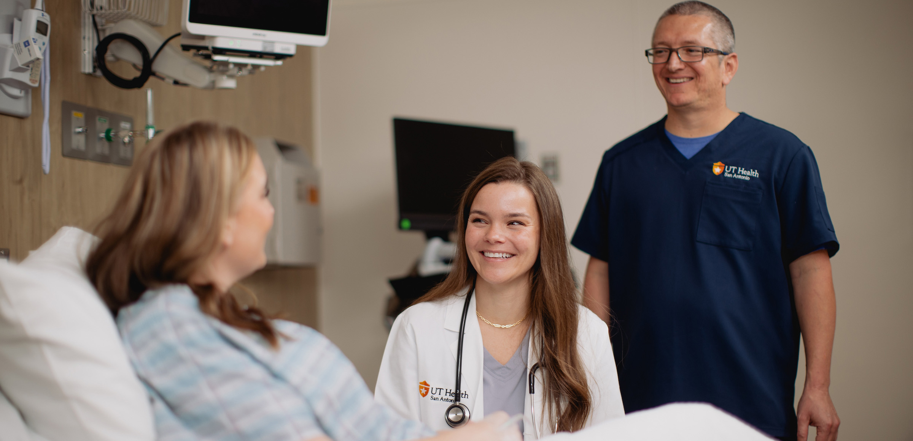

At UT Health San Antonio, you are at the center of everything we do. Our physicians bring together world-class medical expertise, groundbreaking treatments and a deeply personal approach to care.
Here, knowledge and compassion combine to give you answers, options and care designed around what matters most to you.
Your primary care physician is often the first step in your health journey and your connection to the experts at UT Health San Antonio.
Our family medicine, internal medicine, pediatric and geriatric care teams provide preventive care, help manage ongoing health needs and coordinate specialty care when you need it.
We give you access to specialists across South Texas' largest multispecialty group, so your care teams stay connected as your needs change.
When you need specialized care, expertise matters.
UT Health San Antonio brings together more than 1,600 providers and multidisciplinary care teams across more than 120 specialties and subspecialties. Because our physicians also teach and conduct research, they incorporate the latest research-based therapies into your treatment plan.
Whether your needs are routine or highly complex, our specialists work together to help you move forward with peace of mind.
Mays Cancer Center at UT Health San Antonio is the only National Cancer Institute-designated Cancer Center in Central and South Texas. Our cancer care teams combine nationally recognized expertise, leading-edge treatments and pioneering research to give you more possibilities in cancer care.
Our specialists collaborate across disciplines to develop personalized treatment plans and connect eligible patients with innovative therapies and clinical trials. The Institute for Drug Development has helped bring more than 20 cancer drugs approved by the U.S. Food and Drug Administration to patients.
For patients and families, that means more choices, greater access to new therapies and a care team focused on finding the best path forward.
UT Health San Antonio provides comprehensive orthopaedic and sports medicine care for injuries, joint pain and a wide range of orthopaedic conditions.
As the official sports medicine partner of the San Antonio Spurs, we bring the same high level of precision and care trusted by professional athletes to every patient we care for. Our providers also care for collegiate and professional athletes across South Texas, including UTSA Roadrunners, San Antonio FC and the San Antonio Missions Baseball Club.
Our specialists offer nonsurgical treatment, rehabilitation, and advanced surgical procedures. We help you understand your treatment options and make informed decisions about your care, from diagnosis through recovery.
UT Health San Antonio is home to the only comprehensive Spine Center in South Texas, providing dedicated spine care for both adults and children.
Our multidisciplinary team includes neurosurgeons, physical medicine specialists, pain consultants and bracing experts, all in one location. We treat spinal conditions with conservative, nonsurgical care whenever possible and perform more than 1,000 spine surgeries each year. These surgeries include innovative procedures not widely available in the region.
Our specialists work together to understand how a spinal condition affects your life and find the treatment that’s right for you.
UT Health San Antonio Multispecialty and Research Hospital brings together an unsurpassed network of physicians, medical innovation, personalized surgical and inpatient care, and the powerful resources of an academic health center in one place.
Designed around patients with complex and unique care needs, the hospital connects you with experienced teams, lifesaving technology and coordinated care throughout your experience.
Explore the UT Health San Antonio Multispecialty and Research Hospital
MyChart gives you secure, convenient access to UT Health San Antonio care from your computer or smartphone.
Use MyChart to view health information, communicate with your care team, manage appointments and access other tools designed to make your care easier.